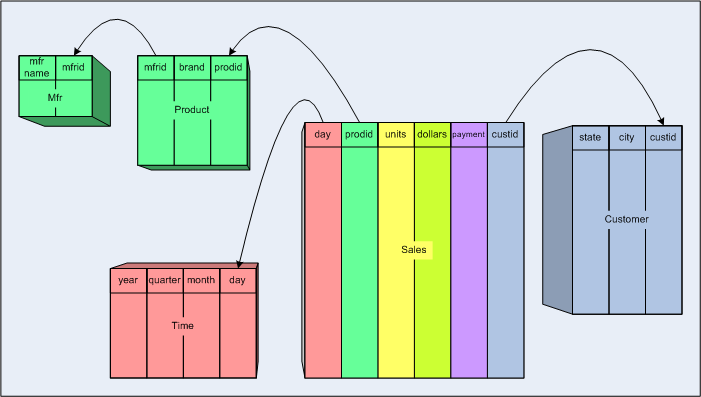
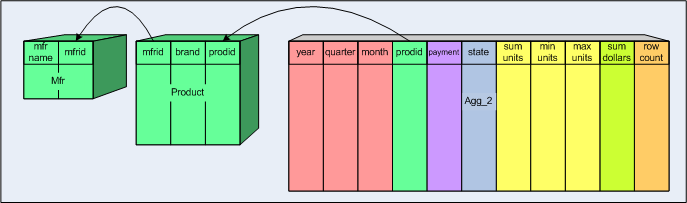

By Richard Emberson; last updated by Julian Hyde, July, 2005.
Unlike many OLAP servers, Mondrian does not store data on disk: it just works on the data in the RDBMS, and once it has read a piece of data once, it stores that data in its cache. This greatly simplifies the process of installing Mondrian, but it puts limits on Mondrian's performance when Mondrian is applied to a huge dataset.
Consider what happens when the CEO runs her Sales Report first thing on a Monday morning. This report contains a single number: the total sales of all products, in all regions, this year. In order to get this number, Mondrian generates a query something like this:
SELECT sum(store_sales)
FROM sales_fact,
time
WHERE sales_fact.time_id = time.time_id
AND time.year = 2005
and sends it to the DBMS. The DBMS takes several minutes to execute it: which is understandable because the DBMS has to read all of this year's records in the fact table (a few million sales, say) and aggregate them into a single total. Clearly, what is needed in this case, and in others like it, is a pre-computed summary of the data: an aggregate table.
An aggregate table coexists with the base fact table, and contains pre-aggregated measures build from the fact table. It is registered in Mondrian's schema, so that Mondrian can choose to use whether to use the aggregate table rather than the fact table, if it is applicable for a particular query.
Designing aggregate tables is a fine art. There is extensive research, both empirical and theoretical, available on the web concerning different ways to structure aggregate tables and we will not attempt to duplicate any of it here.
To explain what aggregate tables are, let's consider a simple star schema.

The star schema has a single fact table Sales, two measure
columns (units and dollars) and four dimension tables
(Product, Mfr, Customer, Time,
and Customer).
On top of this star schema, we create the following multidimensional model:
[Sales] has two measures [Unit sales] and
[Dollar sales][Product] has levels [All Products],
[Manufacturer], [Brand], [Prodid][Time] has levels [All Time],
[Year], [Quarter], [Month], [Day][Customer] has levels [All Customers],
[State], [City], [Custid][Payment Method] has levels [All Payment
Methods], [Payment Method]Note that the [Product] dimension is a 'snowflake dimension'
(that is, it is spread across two tables Product and Mfr)
and the [Payment Method] dimension is contained within the
payment column in the fact table.
Now let's create an aggregate table, Agg_1:
See how the original star schema columns have been combined into the table:
Time dimension has been "collapsed" into the aggregate
table, omitting the month and day columns.Product dimension has been
"collapsed" into the aggregate table.units, dollars),
there are one or more measure columns in the aggregate table (sum units, min
units, max units, sum dollars).row count, representing the
"count" measure.Agg_1 would be declared like this:
<Cube name="Sales">
<Table name="sales">
<AggName name="agg_1">
<AggFactCount column="row count"/>
<AggMeasure name="[Measures].[Unit Sales]" column="sum units"/>
<AggMeasure name="[Measures].[Min Units]" column="min units"/>
<AggMeasure name="[Measures].[Max Units]" column="max units"/>
<AggMeasure name="[Measures].[Dollar Sales]" column="sum dollars"/>
<AggLevel name="[Time].[Year]" column="year"/>
<AggLevel name="[Time].[Quarter]" column="quarter"/>
<AggLevel name="[Product].[Mfrid]" column="mfrid"/>
<AggLevel name="[Product].[Brand]" column="brand"/>
<AggLevel name="[Product].[Prodid]" column="prodid"/>
</AggName>
</Table>
<!-- Rest of the cube definition -->
</Cube>
Another aggregate table, Agg_2:

and the corresponding XML:
<Cube name="Sales">
<Table name="sales">
<AggName name="agg_1" ... />
<AggName name="agg_2">
<AggFactCount column="row count"/>
<AggForeignKey factColumn="prodid" aggColumn="prodid"/>
<AggMeasure name="[Measures].[Unit Sales]" column="sum units"/>
<AggMeasure name="[Measures].[Min Units]" column="min units"/>
<AggMeasure name="[Measures].[Max Units]" column="max units"/>
<AggMeasure name="[Measures].[Dollar Sales]" column="sum dollars"/>
<AggLevel name="[Time].[Year]" column="year"/>
<AggLevel name="[Time].[Quarter]" column="quarter"/>
<AggLevel name="[Time].[Month]" column="month"/>
<AggLevel name="[Payment Method].[Payment Method]" column="payment"/>
<AggLevel name="[Customer].[State]" column="state"/>
</AggName>
</Table>
<Dimension name="Product">
<Hierarchy hasAll="true" primaryKey="prodid" primaryKeyTable="Product">
<Join leftKey="mfrid" rightKey="mfrid">
<Table name="Product"/>
<Table name="Mfr"/>
</Join>
<Level name="Manufacturer" table="Mfr" column="mfrid"/>
<Level name="Brand" table="Product" column="brand"/>
<Level name="Name" table="Product" column="prodid"/>
</Hierarchy>
</Dimension>
<!-- Rest of the cube definition -->
</Cube>
Several dimensions have been collapsed: [Time] at the
[Quarter] level; [Customer] at the [State]
level; and [Payment Method] at the [Payment Method]
level. But the [Product] dimension has been retained in its
original snowflake form.
The <AggForeignKey> element is
used to declare that the column prodid links to the dimension
table, but all other columns remain in the Product and Mfr
dimension tables.
A fact table can have zero or more aggregate tables. Every aggregate table is associated with just one fact table. It aggregates the fact table measures over one or more of the dimensions. As an example, if a particular column in the fact table represents the number of sales of some product on a given day by a given store, then an aggregate table might be created that sums the information so that applies at a month level rather than by day. Such an aggregate might reasonably be 1/30th the size of the fact table (assuming comparable sales for every day of a month). Now, if one were to execute a MDX query that needed sales information at a month (or quarter or year) level, running the query against the aggregate table is faster but yields the same answer as if it were run against the base fact table.
Further, one might create an aggregate that not only aggregates at the month level but also, rather than at the individual store level, aggregates at the state level. If there were, say, 20 stores per state, then this aggregate table would be 1/600th the size of the original fact table. MDX queries interested only at the month or above and state or above levels would use this table.
When a MDX query runs, what aggregate should be used? This comes down to what measures are needed and with which dimension levels. The base fact table always has the correct measures and dimension levels. But, it might also be true that there is one or more aggregate tables that also have the measures and levels. Of these, the aggregate table with the lowest cost to read, the smallest number of rows, should be the table used to fulfill the query.
Mondrian supports two aggregation techniques which are called "lost" dimension and "collapsed" dimension. For the creation of any given aggregate table these can be applied independently to any number of different dimensions.
A "lost" dimension is one which is completely missing from the aggregate table. The measures that appear in the table have been aggregated across all values of the lost dimension. As an example, in a fact table with dimensions of time, location, and product and measure sales, for an aggregate table that did not have the location dimension that dimension would be "lost". Here, the sales measure would be the aggregation over all locations. An aggregate table where all of the dimensions are lost is possible - it would have a single row with the measure aggregated over everything - sales for all time, all locations and all products.
fact table
time_id
product_id
location_id
measure
lost (time_id) dimension table
product_id
location_id
measure (aggregated over time)
fact_count
fully lost dimension table
measure (aggregated over everything)
fact_count
Note the "fact_count" column in the aggregate table. This additional column is a general feature of aggregate tables. It is a count of how many fact table columns were aggregated into the one aggregate table row. As an example, if for a particular choice of product_id and location_id, the time_id occurred 5 times in the fact table, then in the aggregate table the fact_count column would contain 5 for that product_id/location_id pair (a given product was sold at a given location at 5 different times).
The second supported aggregation technique provides a finer level of control, the "collapsed" dimension technique. Recall that the dimension key in the fact table refers (more or less) to the lowest level in the dimension hierarchy. For a collapsed dimension, the dimension key in the aggregate table is replaced with a set of dimension levels; the dimension key column is replaced with a set of columns; a fully denormalized summary table for that dimension. As an example, if the time dimension with base fact table foreign key time_id had the levels: day, month, quarter and year, and in an aggregate it was collapsed to the month level, then the aggregate table would not have a time_id column but rather columns for month, quarter and year. The SQL generated for a MDX query for which this aggregate table can be used, would no longer refer to the time dimension's table but rather all time related information would be gotten from the aggregate table.
time dimension table
time_id
day
month
quarter
year
fact table
time_id
measure
collapsed dimension table
month
quarter
year
measure (aggregated to month level)
fact_count
In the literature, there are other ways of creating aggregate tables but they are not supported by Mondrian at this time.
Aggregate tables must be built. Generally, they not real-time; they are rebuilt, for example, every night for use the following day by the analysts. Considering the lost and collapsed dimension technique for aggregate table definition, one can estimate that for a dimension with N levels, there are N+1 possible aggregate tables (N collapsed and 1 lost). Also, dimensions (with different dimension tables) can be aggregated independently. For the FoodMart Sales cube there are 1400 different possible aggregate tables.
Clearly, one does not want to create all possible aggregate tables. Which ones to create depends upon two considerations. The first consideration is application dependent: the nature of the MDX queries that will be executed. If many of the queries deal with per month and per state questions, then an aggregate at those levels might be created. The second consideration is application independent: per dimension aggregating from the lowest level to the next lowest generally gives greater bang for the buck than aggregating from the N to the N+1 (N>1) level. This is because 1) a first level aggregation can be used for all queries at that level and above and 2) dimension fanout tends to increase for the lower levels. Of course, your mileage may vary.
In a sense, picking which aggregate tables to build is analogous to picking which indexes to build on a table; it is application dependent and experience helps.
The hardest part about the actually creation and population of aggregate tables is figuring out how to create the first couple; what the SQL looks like. After that they are pretty much all the same.
Four examples will be given. They all concern building aggregate tables for the sales_fact_1997 fact table. As a reminder, the sales_fact_1997 fact table looks like:
sales_fact_1997
product_id
time_id
customer_id
promotion_id
store_id
store_sales
store_cost
unit_sales
The first example is a lost time dimension aggregate table, the time_id foreign key is missing.
CREATE TABLE agg_l_05_sales_fact_1997 (
product_id INTEGER NOT NULL,
customer_id INTEGER NOT NULL,
promotion_id INTEGER NOT NULL,
store_id INTEGER NOT NULL,
store_sales DECIMAL(10,4) NOT NULL,
store_cost DECIMAL(10,4) NOT NULL,
unit_sales DECIMAL(10,4) NOT NULL,
fact_count INTEGER NOT NULL);
CREATE INDEX i_sls_97_cust_id ON agg_l_05_sales_fact_1997 (customer_id);
CREATE INDEX i_sls_97_prod_id ON agg_l_05_sales_fact_1997 (product_id);
CREATE INDEX i_sls_97_promo_id ON agg_l_05_sales_fact_1997 (promotion_id);
CREATE INDEX i_sls_97_store_id ON agg_l_05_sales_fact_1997 (store_id);
INSERT INTO agg_l_05_sales_fact_1997 (
product_id,
customer_id,
promotion_id,
store_id,
store_sales,
store_cost,
unit_sales,
fact_count)
SELECT
product_id,
customer_id,
promotion_id,
store_id,
SUM(store_sales) AS store_sales,
SUM(store_cost) AS store_cost,
SUM(unit_sales) AS unit_sales,
COUNT(*) AS fact_count
FROM
sales_fact_1997
GROUP BY
product_id,
customer_id,
promotion_id,
store_id;
A couple of things to note here.
The above is in MySQL's dialect of SQL, and may not work for your database - but I hope the general idea is clear. The aggregate table "looks like" the base fact table except the time_id column is missing and there is a new fact_count column. The insert statement populates the aggregate table from the base fact table summing the measure columns and counting to populate the fact_count column. This done while grouping by the remaining foreign keys to the remaining dimension tables.
Next, some databases recognize star joins - Oracle for instance. For such database one should not create indexes, not on the fact table and not on the aggregate tables. On the other hand, databases that do not recognize star joins will require indexes on both the fact table and the aggregate tables.
For our purposes here, the exact name of the aggregate table is not important; the "agg_l_05_" preceding the base fact table's name sales_fact_1997. First, the aggregate table name must be different from the base fact table name. Next, the aggregate table name ought to be related to the base fact table name both for human eyeballing of what aggregate is associated with which fact table, but also, as described below, Mondrian employs mechanism to automagically recognize which tables are aggregates of others.
The following example is a collapsed dimension aggregate table where the time dimension has been rolled up to the month level.
CREATE TABLE agg_c_14_sales_fact_1997 (
product_id INTEGER NOT NULL,
customer_id INTEGER NOT NULL,
promotion_id INTEGER NOT NULL,
store_id INTEGER NOT NULL,
month_of_year SMALLINT(6) NOT NULL,
quarter VARCHAR(30) NOT NULL,
the_year SMALLINT(6) NOT NULL,
store_sales DECIMAL(10,4) NOT NULL,
store_cost DECIMAL(10,4) NOT NULL,
unit_sales DECIMAL(10,4) NOT NULL,
fact_count INTEGER NOT NULL);
CREATE INDEX i_sls_97_cust_id ON agg_c_14_sales_fact_1997 (customer_id);
CREATE INDEX i_sls_97_prod_id ON agg_c_14_sales_fact_1997 (product_id);
CREATE INDEX i_sls_97_promo_id ON agg_c_14_sales_fact_1997 (promotion_id);
CREATE INDEX i_sls_97_store_id ON agg_c_14_sales_fact_1997 (store_id);
INSERT INTO agg_c_14_sales_fact_1997 (
product_id,
customer_id,
promotion_id,
store_id,
month_of_year,
quarter,
the_year,
store_sales,
store_cost,
unit_sales,
fact_count)
SELECT
BASE.product_id,
BASE.customer_id,
BASE.promotion_id,
BASE.store_id,
DIM.month_of_year,
DIM.quarter,
DIM.the_year,
SUM(BASE.store_sales) AS store_sales,
SUM(BASE.store_cost) AS store_cost,
SUM(BASE.unit_sales) AS unit_sales,
COUNT(*) AS fact_count
FROM
sales_fact_1997 AS BASE, time_by_day AS DIM
WHERE
BASE.time_id = DIM.time_id
GROUP BY
BASE.product_id,
BASE.customer_id,
BASE.promotion_id,
BASE.store_id,
DIM.month_of_year,
DIM.quarter,
DIM.the_year;
In this case, one can see that the time_id foreign key in the base fact table has been replaced with the columns: month_of_year, quarter, and the_year in the aggregate table. There is, as always, the fact_count column. The measures are inserted as sums. And, the group by clause is over the remaining foreign keys as well as the imported time dimension levels.
When creating a collapsed dimension aggregate one might consider creating indexes for the columns imported from the dimension that was collapsed.
Below is another aggregate table. This one has two lost dimensions (store_id and
promotion_id) as well as collapsed dimension on time
to the quarter level. This shows how aggregate techniques can be
mixed.
CREATE TABLE agg_lc_100_sales_fact_1997 (
product_id INTEGER NOT NULL,
customer_id INTEGER NOT NULL,
quarter VARCHAR(30) NOT NULL,
the_year SMALLINT(6) NOT NULL,
store_sales DECIMAL(10,4) NOT NULL,
store_cost DECIMAL(10,4) NOT NULL,
unit_sales DECIMAL(10,4) NOT NULL,
fact_count INTEGER NOT NULL);
CREATE INDEX i_sls_97_cust_id ON agg_lc_100_sales_fact_1997 (customer_id);
CREATE INDEX i_sls_97_prod_id ON agg_lc_100_sales_fact_1997 (product_id);
INSERT INTO agg_lc_100_sales_fact_1997 (
product_id,
customer_id,
quarter,
the_year,
store_sales,
store_cost,
unit_sales,
fact_count)
SELECT
BASE.product_id,
BASE.customer_id,
DIM.quarter,
DIM.the_year,
SUM(BASE.store_sales) AS store_sales,
SUM(BASE.store_cost) AS store_cost,
SUM(BASE.unit_sales) AS unit_sales,
COUNT(*) AS fact_count
FROM sales_fact_1997 AS BASE,
time_by_day AS DIM
WHERE
BASE.time_id = DIM.time_id
GROUP BY
BASE.product_id,
BASE.customer_id,
DIM.quarter,
DIM.the_year;
In the above three examples, for the most part the column names in the aggregate are the same column names that appear in the fact table and dimension tables. These tables would all be recognized by the Mondrian default aggregate recognizer. It is possible to create an aggregate table and name the columns arbitrarily. For such an aggregate, an explicit Mondrian recognizer must be specified.
CREATE TABLE agg_c_special_sales_fact_1997 (
PRODUCT_ID INTEGER NOT NULL,
CUSTOMER_ID INTEGER NOT NULL,
PROMOTION_ID INTEGER NOT NULL,
STORE_ID INTEGER NOT NULL,
TIME_MONTH SMALLINT(6) NOT NULL,
TIME_QUARTER VARCHAR(30) NOT NULL,
TIME_YEAR SMALLINT(6) NOT NULL,
STORE_SALES_SUM DECIMAL(10,4) NOT NULL,
STORE_COST_SUM DECIMAL(10,4) NOT NULL,
UNIT_SALES_SUM DECIMAL(10,4) NOT NULL,
FACT_COUNT INTEGER NOT NULL);
CREATE INDEX i_sls_97_cust_id ON agg_c_special_sales_fact_1997 (CUSTOMER_ID);
CREATE INDEX i_sls_97_prod_id ON agg_c_special_sales_fact_1997 (PRODUCT_ID);
CREATE INDEX i_sls_97_promo_id ON agg_c_special_sales_fact_1997 (PROMOTION_ID);
CREATE INDEX i_sls_97_store_id ON agg_c_special_sales_fact_1997 (STORE_ID);
INSERT INTO agg_c_special_sales_fact_1997 (
PRODUCT_ID,
CUSTOMER_ID,
PROMOTION_ID,
STORE_ID,
TIME_MONTH,
TIME_QUARTER,
TIME_YEAR,
STORE_SALES_SUM,
STORE_COST_SUM,
UNIT_SALES_SUM,
FACT_COUNT)
SELECT
BASE.product_id,
BASE.customer_id,
BASE.promotion_id,
BASE.store_id,
DIM.month_of_year,
DIM.quarter,
DIM.the_year,
SUM(BASE.store_sales) AS STORE_SALES_SUM,
SUM(BASE.store_cost) AS STORE_COST_SUM,
SUM(BASE.unit_sales) AS UNIT_SALES_SUM,
COUNT(*) AS FACT_COUNT
FROM
sales_fact_1997 BASE, time_by_day DIM
WHERE
BASE.time_id = DIM.time_id
GROUP BY
BASE.product_id,
BASE.customer_id,
BASE.promotion_id,
BASE.store_id,
DIM.month_of_year,
DIM.quarter,
DIM.the_year;
This aggregate table has column names that are not identical to those found in the base fact table and dimension table. It is still a valid aggregate but Mondrian has to be told how to map its columns into those of the base fact table.
Sometimes with multiple aggregate tables, one aggregate table is an aggregate of not only the base fact table but also another aggregate table; an aggregate table with lost time and product dimensions (no time_id and product_id foreign keys) is an aggregate of the base fact table and an aggregate which only has a lost time dimension (no time_id foreign key). In this case, one might first build the aggregate with only the lost time dimension and then build the aggregate with both lost time and product dimensions from that first aggregate - it will be faster (in some cases, much faster) to populate the second aggregate from the first rather than from the base fact table.
One last note, when creating aggregate tables from the base fact table pay attention to the size of the numeric columns - what might be big enough in the base fact table might not be big enough in an aggregate.
Mondrian has to know about the aggregate tables in order to use them. You can either define an aggregate explicitly, or set up rules to recognize several aggregate tables at the same time.
How Mondrian recognizes aggregate table names and columns pretty much dictates how one must name those table names and columns when creating them in the first place!
Rules are templates, designed to work for all fact table names and their column names. These rules are templates of regular expressions that are instantiated with the names of a fact table and its columns. In order to describe the rule templates, a name that instantiate a rule are represented in a rule by have the name bracketed by "${" and "}". As an example, "abc_${name}_xyz" is a rule parameterized by "name". When name is "john" the template becomes "abc_john_xyz".
The regular expression engine used here and a definition of the allowed regular expression grammar is found in the Java regular expression Pattern class: java.util.regex.Pattern.
In order that a table be recognized as an aggregate table, Mondrian must be able to map from the fact table foreign key columns and measure columns and those in the aggregate table. In addition, Mondrian must identify the fact count column in the aggregate and possible level columns (which would appear in an aggregate table if it had a "collapsed" dimension). What follows is a description of the steps taken in the identification of aggregate tables by the default recognizer. If at any step, a match fails, the table is rejected as an aggregate table.
Starting off, the candidate aggregate table's name must comply with the aggregate table name rule. Represented as a template regular expression the rule is:
agg_.+_${fact_table_name}
which is parameterized with the fact table's name. (In addition, this rule is applied in "ignore case" mode.) This means that an aggregate table's name must start with "agg_" (ignoring character case), followed by at least one character, then the '_' character and, lastly, the name of the fact table. The ".+" in the template has special meaning in a regular expression - it matches one or more characters.
As an example of applying the aggregate table name rule,
let the fact table be called
sales_fact_1997
, the
Sales
cube's fact table from the FoodMart schema. Applying the
specific fact table name to the regular expression template
creates the following regular expression:
agg_.+_sales_fact_1997
This will match the following table names:
agg_l_05_sales_fact_1997agg_c_14_sales_fact_1997agg_lc_100_sales_fact_1997agg_c_special_sales_fact_1997AGG_45_SALES_FACT_1997AGG_drop_time_id_sales_fact_1997The aggregate table name recognition mechanism has one additional programatic feature, one can specify that only a portion of the base fact table name be used as the basis of template name. For instance, if the DBA demanded that all fact tables begin with the string "fact_", e.g., "fact_sales_fact_1997", one would certainly not want that string to have to be part of each aggregate table's name. The aggregate table name recognition mechanism allows one to specify a regular expression with one and only one group clause (a group clause is a pattern bracketed by '(' and ')'). Whatever is matched by the contents of the group clause is taken to be the part of the fact table name to be used in the matching template. This regular expression containing the group clause is specified as the "basename" attribute. The default Mondrian aggregate table recognizer does not use this feature. For more information see the associated developer's note link.
After the default recognizer determines that a table's name matches the aggregate table template regular expression for a given fact table, it then attempts to match columns. The first column tested for is the "fact count" column. Here the candidate aggregate table must have a column called "fact_count" (ignoring case) and this column's type must be numeric. The following examples would match as "fact count" columns.
fact_count
FACT_COUNT
fact_COUNT
Following matching the "fact count" column, the candidate aggregate table's columns are examined for possible foreign key matches. For each of the foreign key column names in the fact table it is determined if there are any character case independent matches of the aggregate table's columns. Those columns that match are noted. It is alright if no columns match; the aggregate might be a "collapsed" dimension aggregate with no fact table foreign keys remaining. If the fact table had foreign key columns "store_id" and "time_id", then the following aggregate table columns (for example) would match:
time_idstore_idTIME_IDSTORE_IDtime_IDSTORE_idAt this point, matches are looked for the level and measure columns. Both of these matching rules are multi-part - has sub rules; each rule has more than one possible regular expression that might match where a match on any one is a match.
There are three sub rules for matching level columns. Each is a template which is parameterized with 1) the fact table's cube's dimension hierarchy's name, "hierarchy_name", 2) the fact table's cube's dimension hierarchy's level name, "level_name", and 3) the dimension table's level column name, "level_column_name":
${hierarchy_name}_${level_name}${hierarchy_name}_${level_column_name}${level_column_name}If any of these parameters have space characters, ' ', these are mapped to underscore characters, '_', and, similarly, dot characters, '.', are also mapped to underscores. So, if the hierarchy_name is "Time", level_name is "Month" and level_column_name is month_of_year, the possible aggregate table column names are:
time_monthtime_month_of_yearmonth_of_yearFor this rule, the "hierarchy_name" and "level_name" are converted to lower case while the "level_column_name" must match exactly.
Lastly, there is the rule for measures. There are three parameters to matching aggregate columns to measures: 1) the fact table's cube's measure name, "measure_name", 2) the fact table's cube's measure column name, "measure_column_name", and 3) the fact table's cube's measure's aggregator (sum, avg, max, etc.), "aggregate_name".
${measure_name}${measure_column_name}${measure_column_name}_${aggregate_name}where the measure name is converted to lower case and both the measure column name and aggregate name are matched as they appear. If the fact table's cube's measure name was, "Avg Unit Sales", the fact table's measure column name is "unit_sales", and, lastly, the fact table's cube's measure's aggregate name is "avg", then possible aggregate table column names that would match are:
avg_unit_salesunit_salesunit_sales_avgFor Mondrian developers there are additional notes describing the default rule recognition schema.
On a per cube basis, in a schema file a user can both include and exclude aggregate tables. A table that would have been include as an aggregate by the default rules can be explicitly excluded. A table that would not be include by the default rules can be explicitly included. A table that would have only been partially recognized by the default rules and, therefore, resulted in a warning or error message, can be explicitly include in rules specified in the cube's definition.
Below is an example for the FoodMart
Sales
cube
with fact table
sales_fact_1997. There are child elements of the
Table
element that deal with aggregate table recognition.
<Cube name="Sales">
<Table name="sales_fact_1997">
<AggExclude name="agg_c_14_sales_fact_1997" />
<AggExclude name="agg_lc_10_sales_fact_1997" />
<AggExclude name="agg_pc_10_sales_fact_1997" />
<AggName name="agg_c_special_sales_fact_1997">
<AggFactCount column="FACT_COUNT"/>
<AggIgnoreColumn column="admin_one"/>
<AggIgnoreColumn column="admin_two"/>
<AggForeignKey factColumn="product_id" aggColumn="PRODUCT_ID" />
<AggForeignKey factColumn="customer_id" aggColumn="CUSTOMER_ID" />
<AggForeignKey factColumn="promotion_id" aggColumn="PROMOTION_ID" />
<AggForeignKey factColumn="store_id" aggColumn="STORE_ID" />
<AggMeasure name="[Measures].[Unit Sales]" column="UNIT_SALES_SUM" />
<AggMeasure name="[Measures].[Store Cost]" column="STORE_COST_SUM" />
<AggMeasure name="[Measures].[Store Sales]" column="STORE_SALES_SUM" />
<AggLevel name="[Time].[Year]" column="TIME_YEAR" />
<AggLevel name="[Time].[Quarter]" column="TIME_QUARTER" />
<AggLevel name="[Time].[Month]" column="TIME_MONTH" />
</AggName>
<AggPattern name="agg_sales_fact_1997_.*">
....
<AggExclude name="agg_sales_fact_1997_olddata" />
<AggExclude pattern="agg_sales_fact_1997_test.*" />
</AggPattern>
</Table>
....
</Cube>
The
AggExclude
elements define tables that should not be considered aggregates of the
fact table. In this case Mondrian is instructed to ignore the tables
agg_c_14_sales_fact_1997,
agg_lc_10_sales_fact_1997
and
agg_pc_10_sales_fact_1997.
Following the excludes is the
AggName
element which identifies the name of an aggregate table
table,
agg_c_special_sales_fact_1997,
and rules for mapping names from the fact table and cube to it.
The two
AggIgnoreColumn
elements are used to specifically state to Mondrian that the columns
admin_one
and
admin_two
are known and should be ignored. If these columns were not so
identified, Mondrian at the end of determining the fitness of
the
agg_c_special_sales_fact_1997
table to be an aggregate of the
sales_fact_1997
fact table would complain that there were extra unidentified columns
and that the mapping was incomplete.
The
AggForeignKey
elements define mappings from the
sales_fact_1997
fact table foreign key column
names into the
agg_c_special_sales_fact_1997
aggregate table column names.
Both the
AggMeasure
and
AggLevel
elements map "logical" name, names defined in the cube's schema,
to the aggregate table's column names.
An aggregate table does not have to have all of the measures
that are found in the base fact table, so it is not a requirement
that all of the fact table measures appear as
AggMeasure
mappings, though it will certainly be the most common case.
The most notable exception are
distinct count
measures; such a measure can be aggregated, but one can not
aggregate further on the measure - the "distinctness" of the
measure has been lost during the first aggregation.
The
AggLevel
entries correspond to collapsed dimensions. For each collapsed
dimension there is a hierarchy of levels spanning from the top
level down to some intermediate level (with no gaps).
The
AggName
element is followed by an
AggPattern
element.
This matches candidate aggregate table names using a
regular expression. Included as child elements of the
AggPattern
element are two
AggExclude
elements. These specifically state what table names should not
be considered by this
AggPattern
element.
In a given
Table
element, all of the
AggExclude
are applied first, followed by the
AggName
element rules and then the
AggPattern
rules.
In the case where the same fact table is used by multiple cubes,
the above still applies, but its across all of the aggregation
rules in all of the multiple cube's
Table
elements.
The first "Agg" element,
name or pattern, that matches per candidate aggregate table
name has its associated rules applied.
Most of the time, the scope of these
include/exclude statements apply only to the cube in question, but
not always. A cube has a fact table and it is the characteristics
of the fact table (like column names) against
which some of the aggregate table rules are applied. But, a fact table
can actually be the basis of more than one cube. In the FoodMart
schema the
sales_fact_1997
fact table applies to both the
Sales
and the
Sales Ragged
cubes.
What this means is that any explicit rules defined in the
Sales
cube also applies to the
Sales Ragged
cube and visa versa.
One feature of the explicit recognizer is very useful. With a single
line in the cubes definition in the schema file,
one can force Mondrian not to recognize any aggregate tables
for the cube's fact table. As an example, for the FoodMart Sales cube
the following excludes all aggregate tables because the regular expression
pattern
".*"
matches all candidate aggregate table names.
<Table name="sales_fact_1997" > <AggExclude pattern=".*" /> </Table>
During aggregate table recognition, rather than fail silently, Mondrian is rather noisy about things it can not figure out.
In general Mondrian looks for the nearest hit. If there is no aggregate table at
the desired granularity, Mondrian rolls up from an aggregate table of lower
granularity. See property mondrian.rolap.aggregates.ChooseByVolume.
There is an important exception for distinct-count measures: they cannot be rolled up. To see why, consider the case of a supermarket chain which has two stores in the same city. Suppose that Store A has 1000 visits from 800 distinct customers in the month of July, while Store B has 1500 visits from 900 distinct customers. Clearly the two stores had a total of 2500 customer visits between them, but how many distinct customers? We can say that there were at least 900, and maybe as many as 1700, but assuming that some customers visit both stores, and the real total will be somewhere in between. "Distinct customers" is an example of a distinct-count measure, and cannot be deduced by rolling up subtotals. You have to go back to the raw data in the fact table.
So, when evaluating a distinct-count measure, Mondrian can only use aggregate table if it has exactly the same granularity as the cell being requested. If there is no aggregate table of the desired granularity, Mondrian does NOT use the aggregate table, and goes instead against the fact table. Once in memory, distinct count measures are cached like other measures, and can be used for future queries.
This has implications for aggregate design. If your application makes extensive use of distinct-count measures, you will need to create an aggregate table for each granularity where it is used. That could be a lot of aggregate tables! (We hope to have a better solution for this problem in future releases.)
Aggregate tables are difficult design and maintain. We make no bones about it. But this is the first release in which aggregate tables have been available, and we decided to get the internals right rather than building a toolset to make them easy to use.
Unless your dataset is very large, Mondrian's performance will be just fine without aggregate tables. If Mondrian isn't performing well, you should first check that your DBMS is well-tuned: see our guide to optimizing performance). If decide to build aggregate tables anyway, we don't offer any tools to help administrators design them, so unless you are blessed with superhuman patience and intuition, using them won't be smooth sailing.
Here are some ideas for tools we'd like to build in the future. I'm thinking of these being utilities, not part of the core runtime engine. There's plenty of room to wrap these utilities in nice graphical interfaces, make them smarter.
AggGen is a tool that generates SQL to support the
creation and maintenance of aggregate tables, and would give a
template for the creation of materialized views for databases that
support those. Given an MDX query, the generated create/insert SQL is
optimal for the given query. The generated SQL covers both the "lost"
and "collapsed" dimensions. For usage, see the documentation for
CmdRunner.
This utility populates (or generates INSERT statements to populate) the agg tables.
For extra credit: populate the tables in topological order, so that higher level aggregations can be built from lower level aggregations.
This utility generates a script containing CREATE TABLE and CREATE INDEX statements all possible aggregate tables (including indexes), XML for these tables, and comments indicating the estimated number of rows in these tables. Clearly this will be a huge script, and it would be ridiculous to create all of these tables. The person designing the schema could copy/paste from this file to create their own schema.
This utility (maybe graphical, maybe text-based) recommends a set of aggregate tables. This is essentially an optimization algorithm, and it is described in the academic literature [AAD+96]. Constraints on the optimization process are the amount of storage required, the estimated time to populate the agg tables.
The algorithm could also take into account usage information. A set of sample queries could be an input to the utility, or the utility could run as a background task, consuming the query log and dynamically making recommendations.
This utility would allow agg tables to be taken offline/online while Mondrian is still running.
Mondrian has properties that control the behavior of its aggregate table sub-system.
Property Type Default Value Description mondrian.rolap.aggregates.UsebooleanfalseIf set to true, then Mondrian uses any aggregate tables that have been read. These tables are then candidates for use in fulfilling MDX queries. If set to false, then no aggregate table related activity takes place in Mondrian. mondrian.rolap.aggregates.ReadbooleanfalseIf set to true, then Mondrian reads the database schema and recognizes aggregate tables. These tables are then candidates for use in fulfilling MDX queries. If set to false, then aggregate table will not be read from the database. Of course, after aggregate tables have been read, they are read, so setting this property false after starting with the property being true, has no effect. Mondrian will not actually use the aggregate tables unless the mondrian.rolap.aggregates.Useproperty is set to true.mondrian.rolap.aggregates.ChooseByVolumebooleanfalseCurrently, Mondrian support to algorithms for selecting which aggregate table to use: the aggregate with smallest row count or the aggregate with smallest volume (row count * row size). If set to false, then row count is used. If true, then volume is used. mondrian.rolap.aggregates.rulesresource or url/DefaultRules.xmlThis is a developer property, not a user property. Setting this to a url (e.g., file://c:/myrules.xml) allows one to use their own "default" Mondrian aggregate table recognition rules. In general use this should never be changed from the default value.mondrian.rolap.aggregates.rule.tagstringdefaultThis is also a developer property. It allows one to pick which named rule in the default rule file to use. In general use this should never be changed from the default value.
| [GBLP96] | J. Gray, A. Bosworth, A. Layman, and H. Pirahesh. Data cube: A relational aggregation operator generalizing group-by, cross-tab, and sub-totals. In Proc. 12th ICDE, pages 152-159, New Orleans, March 1996. [pdf] |
| [AAD+96] | S. Agarwal, R. Agrawal, P. M. Deshpande, A. Gupta, J. F. Naughton, R. Ramakrishnan, and S. Sarawagi. On the computation of multidimensional aggregates. In Proc. 22nd VLDB, pages 506-521, Mumbai, Sept. 1996. [pdf] |
| [ABDGHLS99] | J. Albrecht, A. Bauer, O. Deyerling, H. Gunze, W. Hummer, W. Lehner, L. Schlesinger. Management of Multidimensional Aggregates for Efficient Online Analytical Processing, Proceedings of International Database Engineering and Applications Symposium, 1999, pp. 156– 164. [pdf] |
| [Rittman05] | M. Rittman. Compressed Composites (Oracle 10g Compression) Explained. Online article. [html] |
| Home | No frames | This file is $Id$ (log) |
|